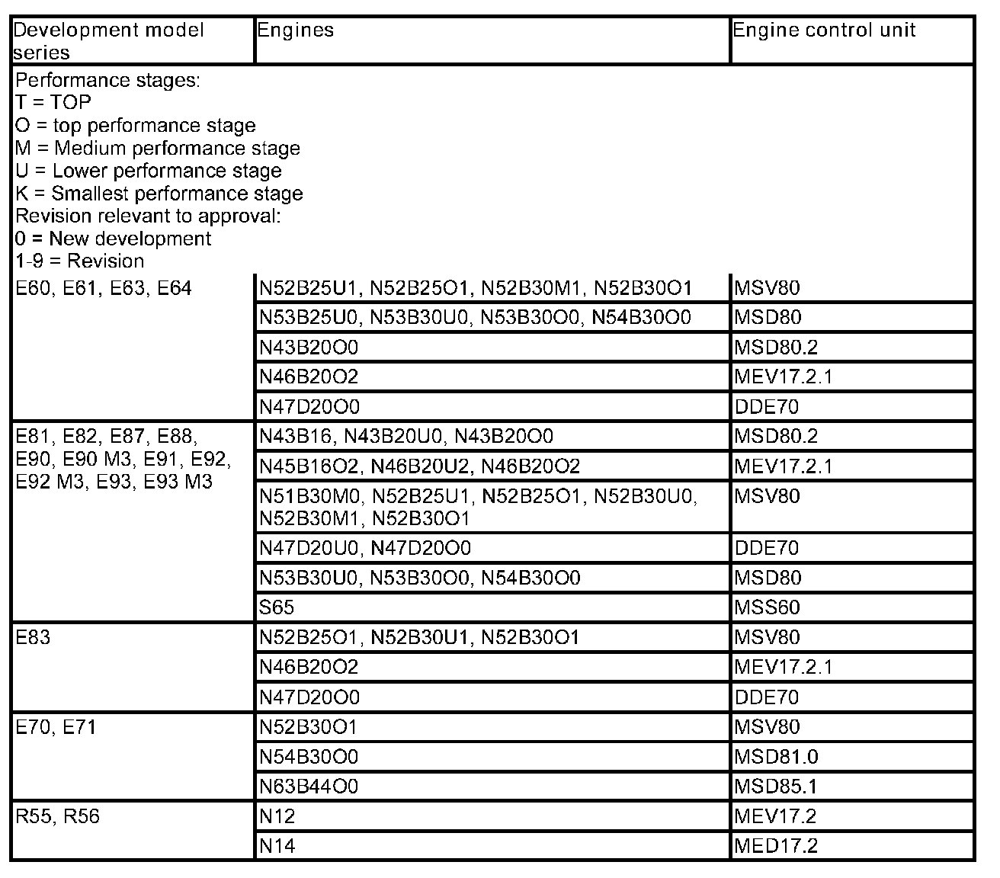
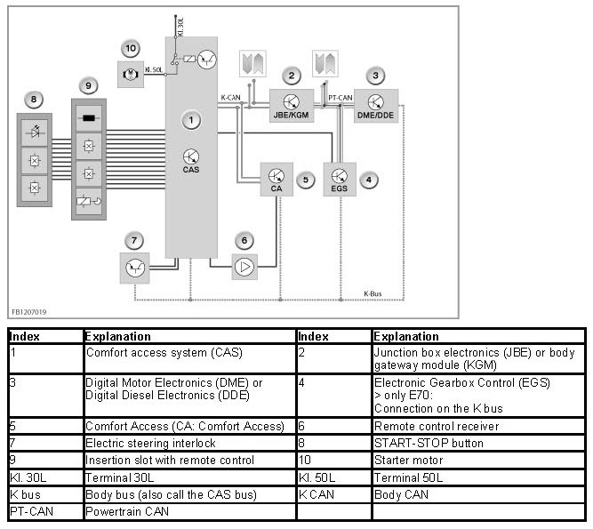
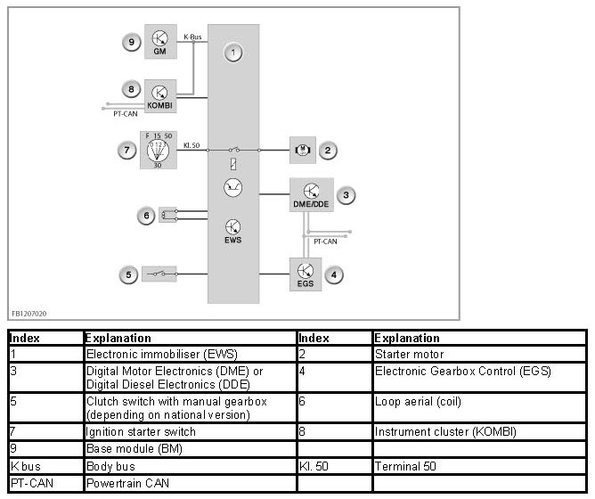

Electronic Vehicle Immobilization
Electronic Vehicle Immobilization
Electronic vehicle immobilization
The electronic immobilizer (EWS) is both an anti-theft device and start release.
The 4th generation EWS is an enhancement of the EWS used to date. This enhancement uses a new and modern encryption method.
Each vehicle is assigned a 128-bit secret code. This secret code is stored in a BMW database. This means that the secret code is only known to BMW.
The secret code is programmed and locked in the following control units:
- CAS control unit (not E83)
The EWS is integrated in the CAS control unit.
- EWS control unit (only E83)
The E83 has an EWS control unit, but no CAS control unit.
- DME/DDE control unit
When the secret code is locked in the control units, it can no longer be deleted or changed. This means that each control unit is assigned to a certain vehicle. The control units mutually identify themselves with the secret code and the same algorithm.
In the 4th generation EWS, there is no direct line (EWS data line) between DME/DDE and CAS (not E83).
The CAN data line (PT-CAN and K-CAN) and the K bus (also called CAS bus) are used for data interchange of the EWS signal. The K bus is used when an EWS signal cannot be sent on the CAN data line.
E83: As before, data interchange between the EWS control unit and DME/DDE takes place across the direct EWS data line.

Brief description of components
The following components are described for the EWS:
Remote control with integrated transponder chip
A transponder chip is integrated in every remote control; this can both transmit and receive. The data transfer takes place in the same way as a transformer between the loop aerial in the insertion slot or ignition lock (only E83) and the transponder chip. The remote control sends data to the EWS or CAS control unit and receives data from it.
The authorization of the remote control for each vehicle is also coded in the transponder chip.
The EWS or CAS control unit can manage a maximum of 10 remote controls that match the control unit, i.e. a maximum of 6 remote controls can be obtained as replacements.
The EWS or CAS control unit can identify the individual remote controls. This means it is possible to disable or enable individual remote controls. If faults occur during communication between the EWS or CAS control unit and the individual remote controls, these are stored in the fault code memory - separately for each individual remote control.
Loop aerial
The insertion slot for the remote control or around the ignition lock (only E83) is a ring aerial (coil) to query the transponder chip. The transponder chip and EWS or CAS control unit communicate via the ring aerial.
Electric steering interlock
On vehicles with an electric steering interlock, this is supplied with electric current after authentication by the CAS.
Only now can the steering be unlocked or locked. An engine start is only permitted when the electric steering interlock has been unlocked and secured.
EWS data line
E83
The EWS control unit and DME/DDE mutually authenticate one another across the EWS data line.
Selector-lever position "P" or "N" with automatic gearbox
On vehicles with automatic gearboxes, start release is only given by the EWS or CAS control unit of the selector lever is in position "P" or "N".
The following control units are involved in the electronic immobilizer (EWS):
CAS: Car Access System
not E83
The CAS control unit is the master control unit for the EWS. The EWS is integrated in the CAS.
The secret code is stored in the CAS control unit and is secure against manipulation.
The CAS control unit is attached to the bus on the K-CAN (body CAN) and the K bus (body bus).
The CAS control unit is the interface to the insertion slot for the remote control.

EWS control unit
only E83
The EWS control unit is attached to the K bus (body bus).
The EWS control unit is the interface to the ignition lock.

DME/DDE: Digital Motor Electronics / Digital Diesel Electronics
The DME / DDE control unit only enables the engine start if a correct enable signal is received from the EWS or CAS control unit. The secret code is stored in the DME/DDE and is secure against manipulation.
JBE: Junction Box electronics
E70, E81, E82, E87, E88, E90, E91, E92, E93, R55, R56
The JBE is the data interface between the PT-CAN (powertrain CAN) and K-CAN (body CAN).
KGM: Body Gateway Module
E60, E61, E63, E64
The KGM is the data interface between the PT-CAN (powertrain CAN) and K-CAN (body CAN).
KOMBI: Instrument cluster
E83
The instrument cluster is the data interface between the PT-CAN (powertrain CAN) and K-bus (body-bus).
EGS: Electronic Gearbox Control
only E70
The Electronic Gearbox Control (EGS) is integrated in the 4th generation EWS as another immobilizer. The EGS control unit is attached to the K bus.
The gearbox function is only enabled when the CAS control unit and EGS control unit authenticate one another.
CA: Comfort Access
With optional extra 322 "Comfort Access": An identification sensor is required instead of the usual remote control. The identification sensor also performs the usual functions of the remote control.
The control unit for Comfort Access (CA control unit) controls the vehicle interior aerials and the vehicle exterior aerials. An ID transmitter scan is carried out. At the same time, the FBD receiver is activated for any ID transmitters which may respond (FBD: remove control service).
The CAS control unit is the master control unit for all functions run by the Comfort Access optional extra.
System functions
The following system functions are described for the EWS:
- Control of the electric steering interlock
- Start enable
Control of the electric steering interlock
During the unlocking procedure, an authentication procedure is run between the Car Access System (CAS) and the electric steering interlock. The electric steering interlock may only commence unlocking after a positive result in the authentication procedure. For safety reasons, the electric steering interlock is not supplied with current while the vehicle is being driven. The electric steering interlock is only supplied with voltage for the unlocking procedure or locking procedure.
Start enable
If the identification data is correct, the CAS control unit activates the starter motor via a relay in the control unit. At the same time, the CAS control unit sends the DME control unit a coded release signal for the engine start. The DME control unit only enables the engine start if a correct enable signal is received from the CAS control unit.
After inserting the ignition key in the ignition lock or the remote control in the insertion slot, the following sequence begins:
- The transponder in the ignition key or in the remote control is supplied with energy via the ring aerial and sends the key data to the EWS or CAS control unit.
- The EWS or CAS control unit checks the correctness of the key data and only then enables activation of the starter by the DME/DDE.
- The DME/DDE uses a random number and the secret code to calculate a request. The DME/DDE sends this request via the CAN data line (PT-CAN and K-CAN) and the K-bus (also called CAS-bus) to the CAS control unit.
- The CAS control unit uses the request and the secret code to calculate the response. The response is sent by the CAS via the CAN data line (PT-CAN and K-CAN) and the K-bus (also called CAS-bus) to the DME/DDE.
- The DME/DDE itself also calculates the response that the CAS control unit expects. The DME/DDE then checks the response received from the CAS control unit to ensure it matches the response it has calculated itself.
If the responses match, the engine start is enabled.
Identical changing codes are stored in the control units; their value changes after every starting operation. The changing code is formed from a random number and the secret code.
Notes for Service department
General information
Adjustment of engine management system with electronic immobilizer
With the introduction of the new EWS (4th generation), the adjustment between the engine control unit and electronic immobilizer is no longer required.
- 6-cylinder petrol engines
The elimination of the adjustment takes effect with the engine control units MSV80 and MSD80 as of 06/2006.
- Diesel engines
Elimination of the adjustment takes effect with the engine control units DDE7 as of 03/2007.
- M-GmbH engines
The elimination of the adjustment takes effect with engine control unit MSS60 as of 06/2007.
From this point onwards, certain control units can only be replaced with control units specifically ordered for each vehicle.
NOTE: Procedure in the event of a defective control unit.
If the CAS, EWS (only E83) or DME / DDE is defective, a certain procedure must be followed.
The required control unit must be ordered exactly for the vehicle. This requires the vehicle data (vehicle identification number).
An EWS adjustment is not necessary after renewing the control unit.
E70
When replacing the Electronic Gearbox Control, an adjustment is necessary. During adjustment, the CAS control unit transfers an individual code to the EGS control unit. This individual code is required for the authentication procedure to enable the gearbox function.
IMPORTANT: A trial replacement of the control units with secret code is not possible.
Spare key
Spare keys can only be obtained through a BMW dealer with BMW Parts Service. There, one of the 6 spare keys is programmed to match the vehicle. This key is not a copy of the lost key, but rather a new key.
A total of no more than 6 spare keys that match the fitted EWS control unit can be manufactured and delivered. If a new key is inserted for the first time in the ignition lock, there is a noticeable start delay of 1 to 2 seconds. Thereafter, the starting operation must be without any delay.
Lost keys must be blocked via the diagnosis. Refer to "Special features of the diagnosis program".
CAUTION: Every request for a key is documented so that enquiries from insurance companies and authorities can be followed up.
Reprocurement after loss of all remote controls or ignition keys
If all remote controls or ignition keys are lost, a new EWS or CAS control unit is required.
Service functions
Blocking / releasing remote controls or ignition keys
It is possible to electronically block or release individual remote controls or ignition keys via the diagnosis (service functions).
IMPORTANT: Electronically blocked means that both the starter and the engine control unit are not enabled for a start. It must be borne in mind that an electronically blocked ignition key still fits mechanically, i.e. all flaps and door can still be opened.
Display of the remote controls or ignition keys used in this vehicle
Here, it is displayed whether each individual ignition key (remote control) managed by the EWS or CAS control unit has already been detected at least once by the EWS or CAS control unit, i.e. it is possible even in the case of older vehicles to recognize how many remote controls or ignition keys have already been used in this vehicle.
No liability can be accepted for printing or other errors. Subject to changes of a technical nature